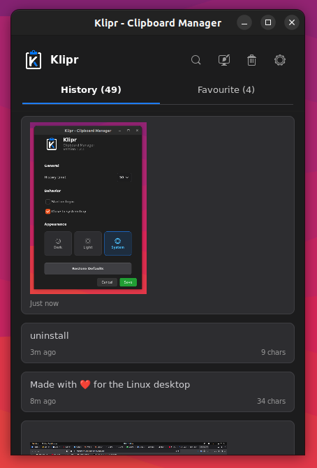
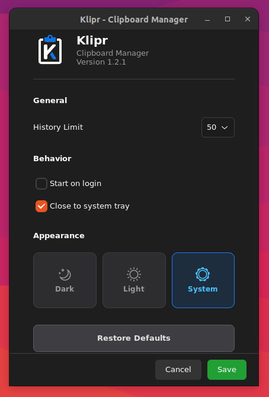

Quản lý Clipboard
chưa bao giờ dễ đến thế
Klipr là một công cụ lịch sử clipboard siêu tốc, tối giản và thanh lịch dành riêng cho môi trường Desktop Linux. Lưu mọi thứ - tìm lại trong tích tắc.
Mọi tính năng bạn cần
Thiết kế tập trung vào trải nghiệm, giúp bạn dễ dàng tìm kiếm và sử dụng lại những gì đã sao chép từ ngày hôm qua hoặc một tháng trước.
Lịch sử thông minh
Tự động sao lưu nội dung với giới hạn tùy chỉnh (50, 100, 150 mục). Tự động dọn dẹp các mục cũ để giữ cho hệ thống luôn gọn nhẹ.
Tìm kiếm tức thì
Tìm thấy bất cứ đoạn mã hay tài liệu nào đã copy bằng công cụ tìm kiếm thời gian thực. Ít độ trễ, hiệu quả cao.
Mục yêu thích
Ghim các snippet thường xuyên sử dụng vào một danh sách riêng biệt để không bao giờ bị xóa tự động.
Hỗ trợ hình ảnh
Không chỉ có văn bản, ảnh chụp màn hình hay hình họa copy cũng được lưu lại và hiển thị ảnh thu nhỏ tiện lợi.
Chủ đề đa dạng
Tùy chỉnh giao diện Sáng, Tối hoặc tự động theo hệ thống. Klipr tích hợp hoàn hảo với màn hình của bạn.
Tối ưu hiệu năng
Hoạt động im lặng trên thanh System Tray. Native 100% bằng Python & GTK4, dùng cực ít tài nguyên hệ thống.


Hướng dẫn cài đặt
Tải file .deb và chạy lệnh sau trong thư mục chứa file để cài đặt: